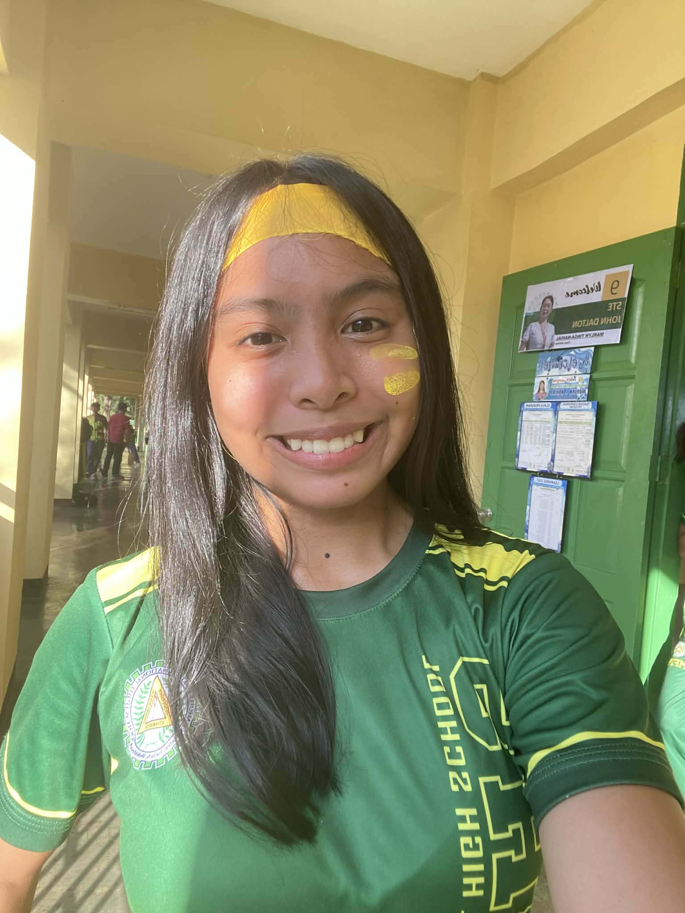

Know more about the developer of this website.

Grade & Section:Grade 10 - STE Albert Einstein
School: Manolo Fortich National High School
Hi! My Name is Alliyah Mae P. Dupalco, a Grade 10 student at Manolo Fortich National High School. I'm interested in web development and technology, and I have a strong passion for mathematics, technology, and computer programming. These interests inspire me to explore creative ways of using technology to make learning more engaging and accessible! I love zoning out and listening to music. But on top of that, I absolutely love socializing and hanging out with people because I'm super friendly, outgoing, and always full of energy.
Developing AliMathics was a fun but challenging experience that really leveled up my HTML, CSS, and JavaScript skills. Making Building interactive tools and designing layouts to make math easier to understand definitely tested my patience, but it massively boosted my creativity and problem-solving abilities. Overall, this project gave me the confidence to keep exploring awesome new ways to blend web development, math, and technology.